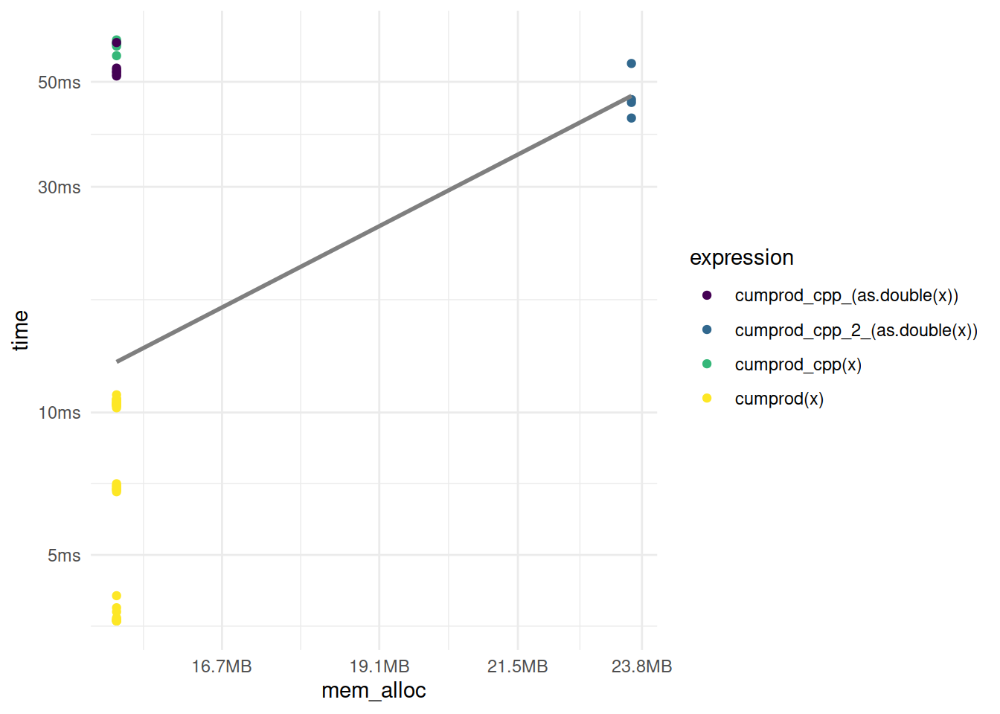
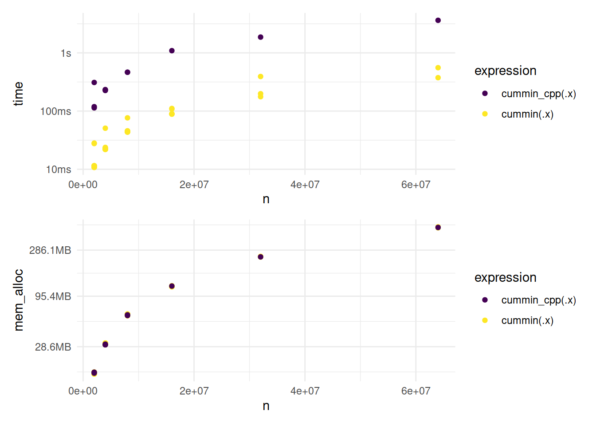
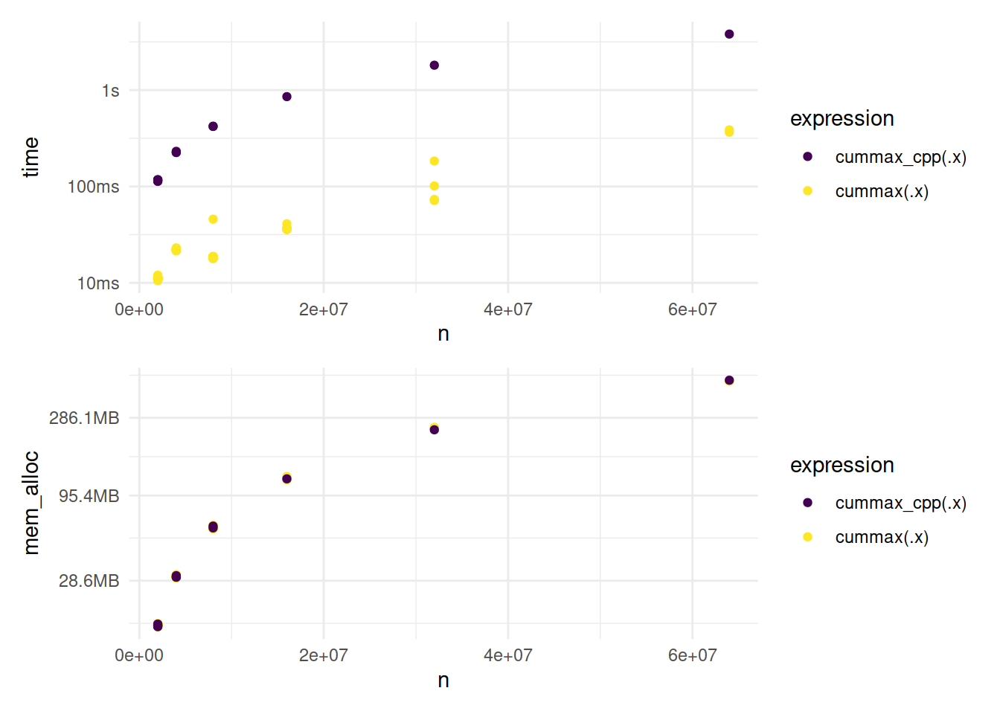
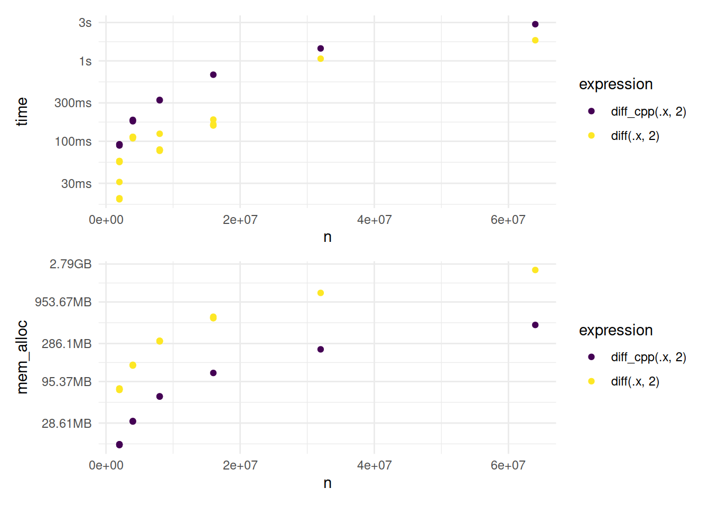
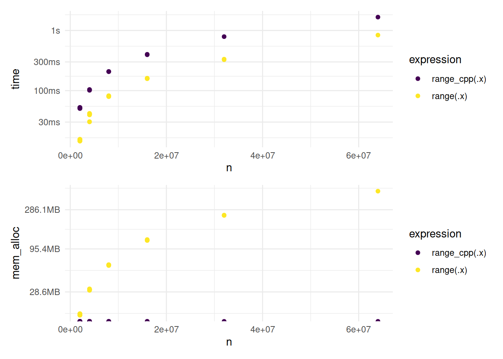

library(ggplot2)
library(dplyr)
library(tidyr)
library(purrr)
library(patchwork)Rolling functions
Required packages
Needed to visualize and simplify showing the results.
Cumulative sum (cumsum())
To be able to create writable vectors, I need to append this below the namespace declaration (i.e., using namespace cpp11).
namespace writable = cpp11::writable;This function returns the cumulative sum of the elements of a vector.
[[cpp11::register]] doubles cumsum_cpp_(doubles x) {
int n = x.size();
writable::doubles out(n);
out[0] = x[0];
for(int i = 1; i < n; ++i) {
out[i] = out[i - 1] + x[i];
}
return out;
}The R equivalent is the following.
#' Return the cumulative sum of the coordinates of a vector (R)
#' @param x numeric vector
#' @export
cumsum_r <- function(x) {
n <- length(x)
out <- numeric(n)
out[1] <- x[1]
for (i in 2:n) {
out[i] <- out[i - 1] + x[i]
}
out
}I also need to add the corresponding auxiliary function for the documentation.
#' Return the cumulative sum of the coordinates of a vector (C++)
#' @inheritParams cumsum_r
#' @export
cumsum_cpp <- function(x) {
cumsum_cpp_(as.double(x))
}A benchmark of the two functions is the following.
set.seed(123) # for reproducibility
x <- rpois(1e6, lambda = 2) # 1,000,000 elements
cumsum(1:3)[1] 1 3 6cumsum_cpp(1:3)[1] 1 3 6cumsum_r(1:3)[1] 1 3 6mark(
cumsum(x),
cumsum_cpp(x),
cumsum_r(x)
)# A tibble: 3 × 6
expression min median `itr/sec` mem_alloc `gc/sec`
<bch:expr> <bch:tm> <bch:tm> <dbl> <bch:byt> <dbl>
1 cumsum(x) 5.37ms 5.49ms 181. 3.81MB 35.7
2 cumsum_cpp(x) 52.11ms 54.32ms 18.4 15.26MB 55.2
3 cumsum_r(x) 129.28ms 133.03ms 7.54 7.66MB 2.51My C++ function is in the middle between R’s cumsum() and my R function cumsum_r().
Cumulative product (cumprod())
In R we can use cumprod() to compute the cumulative product of a vector.
cumprod(1:5)[1] 1 2 6 24 120The C++ implementation can use the shortcuts from the previous part.
[[cpp11::register]] cpp11::doubles cumprod_cpp_(cpp11::doubles x) {
int n = x.size();
writable::doubles out(n);
out[0] = x[0];
for(int i = 1; i < n; ++i) {
out[i] = out[i - 1] * x[i];
}
return out;
}Test correctness.
cumprod(1:5)[1] 1 2 6 24 120cumprod_cpp_(1:5)Error: Invalid input type, expected 'double' actual 'integer'I need an auxiliary function to cast the input as double.
#' Return the cumulative product of the coordinates of a vector (C++)
#' @param x numeric vector
#' @export
cumprod_cpp <- function(x) {
cumprod_cpp_(as.double(x))
}Now I can test the correctness of the function again.
cumprod(1:5)[1] 1 2 6 24 120cumprod_cpp(1:5)[1] 1 2 6 24 120Benchmark.
mark(
cumprod(x),
cumprod_cpp(x)
)# A tibble: 2 × 6
expression min median `itr/sec` mem_alloc `gc/sec`
<bch:expr> <bch:tm> <bch:tm> <dbl> <bch:byt> <dbl>
1 cumprod(x) 3.6ms 10.3ms 116. 15.3MB 47.6
2 cumprod_cpp(x) 60ms 60.3ms 16.6 15.3MB 4.73The C++ implementation is slower than base R.
One remedial solution is not to define the length of the vector and add one coordinate on each step.
[[cpp11::register]] doubles cumprod_cpp_2_(doubles x) {
int n = x.size();
writable::doubles out;
out.push_back(x[0]);
for(int i = 1; i < n; ++i) {
out.push_back(out[i - 1] * x[i]);
}
return out;
}Benchmark.
results <- mark(
cumprod(x),
cumprod_cpp(x),
cumprod_cpp_(as.double(x)),
cumprod_cpp_2_(as.double(x))
)
results %>%
unnest(c(time, mem_alloc, gc)) %>%
select(expression, time, mem_alloc, gc) %>%
filter(gc == "none") %>%
ggplot(aes(x = mem_alloc, y = time, color = expression)) +
geom_point() +
scale_color_viridis_d() +
geom_smooth(method = "lm", se = F, colour = "grey50") +
theme_minimal()
cumprod_cpp_2_ is faster than cumprod_cpp_ but still slower than base R, and it uses more memory than any of the compared function calls.
Cumulative minimum (cummin())
Let’s look at this example from R’s documentation.
c(3:1, 2:0, 4:2)[1] 3 2 1 2 1 0 4 3 2cummin(c(3:1, 2:0, 4:2))[1] 3 2 1 1 1 0 0 0 0The function starts with the first element and then it compares the next element with the current minimum and keeps the smallest value. In this case, when it reaches zero, the next values in the sequence are zeroes because there are no negative values in the original vector.
The lesson from the previous part is to avoid growing vectors, it uses more memory.
The C++ implementation can use the learning from the previous parts.
[[cpp11::register]] doubles cummin_cpp_(doubles x) {
int n = x.size();
writable::doubles out(n);
out[0] = x[0];
for (int i = 1; i < n; ++i) {
// error: taking address of rvalue [-fpermissive]
// double* x1 = &out[i - 1];
double x1 = out[i - 1];
// error: lvalue required as unary ‘&’ operand
// double* x2 = &x[i];
double x2 = x[i];
out[i] = std::min(x1, x2);
}
return out;
}I also have to add the corresponding auxiliary function for the documentation.
#' Return the cumulative minimum of the coordinates of a vector (C++)
#' @param x numeric vector
#' @export
cummin_cpp <- function(x) {
cummin_cpp_(as.double(x))
}Test correctness and benchmark.
cummin(c(3:1, 2:0, 4:2))[1] 3 2 1 1 1 0 0 0 0cummin_cpp(c(3:1, 2:0, 4:2))[1] 3 2 1 1 1 0 0 0 0# create random vectors
set.seed(123) # for reproducibility
bigx <- list(
as.double(rpois(2e6, lambda = 2)),
as.double(rpois(4e6, lambda = 2)),
as.double(rpois(8e6, lambda = 2)),
as.double(rpois(16e6, lambda = 2)),
as.double(rpois(32e6, lambda = 2)),
as.double(rpois(64e6, lambda = 2))
)
results <- map(
bigx,
~ mark(
cummin(.x),
cummin_cpp(.x)
) %>%
mutate(n = length(.x))
)
d <- results %>%
bind_rows() %>%
unnest(c(time, mem_alloc, gc, n)) %>%
select(expression, time, mem_alloc, gc, n)
g1 <- ggplot(d, aes(x = n, y = time, color = expression)) +
geom_jitter(width = 0.01, height = 0.01) +
scale_color_viridis_d() +
theme_minimal()
g2 <- ggplot(d, aes(x = n, y = mem_alloc, color = expression)) +
geom_jitter(width = 0.01, height = 0.01) +
scale_color_viridis_d() +
theme_minimal()
g1 / g2
Cumulative maximum (cummax())
Analogous to the previous part.
[[cpp11::register]] doubles cummax_cpp_(doubles x) {
int n = x.size();
writable::doubles out(n);
out[0] = x[0];
for (int i = 1; i < n; ++i) {
// error: taking address of rvalue [-fpermissive]
// double* x1 = &out[i - 1];
double x1 = out[i - 1];
// error: lvalue required as unary ‘&’ operand
// double* x2 = &x[i];
double x2 = x[i];
out[i] = std::max(x1, x2);
}
return out;
}I also have to add the corresponding auxiliary function for the documentation.
#' Return the cumulative maximum of the coordinates of a vector (C++)
#' @param x numeric vector
#' @export
cummax_cpp <- function(x) {
cummax_cpp_(as.double(x))
}Test correctness and benchmark.
cummax(c(3:1, 2:0, 4:2))[1] 3 3 3 3 3 3 4 4 4cummax_cpp(c(3:1, 2:0, 4:2))[1] 3 3 3 3 3 3 4 4 4results <- map(
bigx,
~ mark(
cummax(.x),
cummax_cpp(.x)
) %>%
mutate(n = length(.x))
)
d <- results %>%
bind_rows() %>%
unnest(c(time, mem_alloc, gc, n)) %>%
select(expression, time, mem_alloc, gc, n)
g1 <- ggplot(d, aes(x = n, y = time, color = expression)) +
geom_jitter(width = 0.01, height = 0.01) +
scale_color_viridis_d() +
theme_minimal()
g2 <- ggplot(d, aes(x = n, y = mem_alloc, color = expression)) +
geom_jitter(width = 0.01, height = 0.01) +
scale_color_viridis_d() +
theme_minimal()
g1 / g2
Lagged Differences (diff())
First order
A simple example in R is.
set.seed(123) # for reproducibility
x <- rpois(10, lambda = 2)
x [1] 1 3 2 4 4 0 2 4 2 2diff(x, 1)[1] 2 -1 2 0 -4 2 2 -2 0The C++ implementation is the following.
[[cpp11::register]] doubles diff1_cpp_(doubles x) {
int n = x.size();
writable::doubles out(n - 1);
for (int i = 0; i < n - 1; ++i) {
out[i] = x[i + 1] - x[i];
}
return out;
}I also have to add the corresponding auxiliary function for the documentation.
#' Return the first order lagged differences of the coordinates of a vector (C++)
#' @param x numeric vector
#' @export
diff1_cpp <- function(x) {
diff1_cpp_(as.double(x))
}Test correctness.
diff(x, 1)[1] 2 -1 2 0 -4 2 2 -2 0diff1_cpp(x)[1] 2 -1 2 0 -4 2 2 -2 0N-th order
A simple example in R is.
diff(x, 2)[1] 1 1 2 -4 -2 4 0 -2The C++ implementation is the following.
[[cpp11::register]] doubles diff_cpp_(doubles x, int lag = 1) {
int n = x.size();
writable::doubles out(n - lag);
for (int i = 0; i < n - lag; ++i) {
out[i] = x[i + lag] - x[i];
}
return out;
}I also have to add the corresponding auxiliary function for the documentation.
#' Return the n-th order lagged differences of the coordinates of a vector (C++)
#' @param x numeric vector
#' @export
diff_cpp <- function(x, lag = 1) {
diff_cpp_(as.double(x), as.integer(lag))
}Test correctness.
diff(x, 2)[1] 1 1 2 -4 -2 4 0 -2diff_cpp(x, 2)[1] 1 1 2 -4 -2 4 0 -2Benchmark.
results <- map(
bigx,
~ mark(
diff(.x, 2),
diff_cpp(.x, 2)
) %>%
mutate(n = length(.x))
)
d <- results %>%
bind_rows() %>%
unnest(c(time, mem_alloc, gc, n)) %>%
select(expression, time, mem_alloc, gc, n)
g1 <- ggplot(d, aes(x = n, y = time, color = expression)) +
geom_jitter(width = 0.01, height = 0.01) +
scale_color_viridis_d() +
theme_minimal()
g2 <- ggplot(d, aes(x = n, y = mem_alloc, color = expression)) +
geom_jitter(width = 0.01, height = 0.01) +
scale_color_viridis_d() +
theme_minimal()
g1 / g2
Range of values (range())
A simple example in R is.
range(x)[1] 0 4The C++ implementation is the following.
[[cpp11::register]] doubles range_cpp_(doubles x) {
int n = x.size();
double x1 = x[0], x2 = x[0];
for (int i = 1; i < n; ++i) {
x1 = std::min(x1, x[i]);
x2 = std::max(x2, x[i]);
}
writable::doubles out(2);
out[0] = x1;
out[1] = x2;
return out;
}I also have to add the corresponding auxiliary function for the documentation.
#' Return the n-th order lagged differences of the coordinates of a vector (C++)
#' @param x numeric vector
#' @export
range_cpp <- function(x) {
range_cpp_(as.double(x))
}Test correctness.
range(x)[1] 0 4range_cpp(x)[1] 0 4Benchmark.
results <- map(
bigx,
~ mark(
range(.x),
range_cpp(.x)
) %>%
mutate(n = length(.x))
)
d <- results %>%
bind_rows() %>%
unnest(c(time, mem_alloc, gc, n)) %>%
select(expression, time, mem_alloc, gc, n)
g1 <- ggplot(d, aes(x = n, y = time, color = expression)) +
geom_jitter(width = 0.01, height = 0.01) +
scale_color_viridis_d() +
theme_minimal()
g2 <- ggplot(d, aes(x = n, y = mem_alloc, color = expression)) +
geom_jitter(width = 0.01, height = 0.01) +
scale_color_viridis_d() +
theme_minimal()
g1 / g2